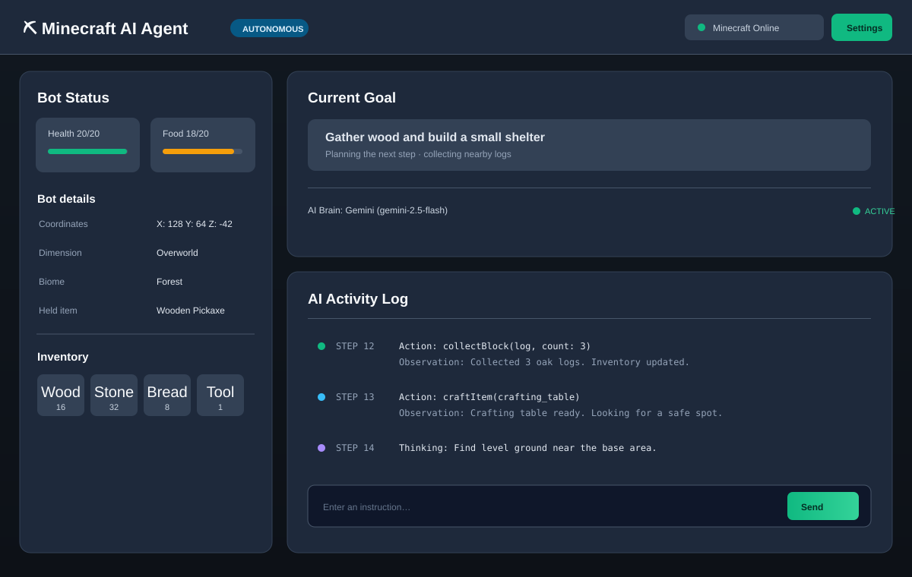

自律行動
目標を受け取ると、状況を見て次の手を考え、採掘・クラフト・建築などを自分で進めます。
MINECRAFT AI AGENT
Minecraftのための自律型AIエージェント。自然な言葉で目標を伝えると、考え、資材を集め、世界の中で行動します。
BUILT TO PLAY
CraftMate が、あなたの Minecraft をもっと自由にします。
目標を受け取ると、状況を見て次の手を考え、採掘・クラフト・建築などを自分で進めます。
Gemini、Groq、Ollama などから好みの AI プロバイダーとモデルを選べます。
ブラウザーからボットの状態、インベントリ、AI の行動ログをひと目で確認できます。
Windows インストーラーで導入。設定画面から接続や AI の構成を管理できます。
YOUR CONTROL ROOM
CraftMate の Web ダッシュボードで、Minecraft の接続状態から AI のアクションログまで確認。指示の送信もブラウザーから行えます。

READY WHEN YOU ARE
CraftMate をダウンロードして、AI と一緒に Minecraft の世界へ。